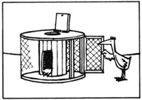

Down-Home Country Lore
Jim McCloud lets his daughter teethe on frozen vegetables; Cynthia Burns reiterates right to tight, left to loose; Janet Ponder places tarps under her children to protect carpet; Velma Sanders checks a car body with a magnet for body putty; Juliette Guth lease their primitive property for improvements; Fran Casey uses straight club soda to clean puppy mistakes; Gerald Osborne makes chicken and rabbit houses from old wire reels from the phone company; Martha Clark wraps shower gifts in a diaper; Janet Hollingsworth concocts a puree to prevent young colts from chewing wood; Wylma Temples shares a home-brew insect repellent recipe; Andrew Hegdinger keeps mosquitos away with a bleach and water solution; Celey Baum hangs walnuts at eye level from door frames to keep flies out of the house; Vicki Eastwood stretches pantyhose over cauliflower heads to keep them white; Jan Huffman catches slugs in sourdough; Mike and Rebel Eldred share how to transform margarine into butter; Alice Shipley dyes her hens with food coloring to keep track of which are laying; Mary Anne Carlson tests eggs in water for freshness; Gary Wallin has a recipe for homemade soda pop; Judy Widner dries flower blossoms to wear and plants their seeds; Barbara Neighbors sends greenthumb friends seeds from the garden; Chester Noga uses night-lights for areas that don't warrant a full bulb; Mary Ann McCall makes fire extinguisher powder from baking soda and sand; Laura Wolfgang uses an old water heater tank to collect rainwater; Robert Longacre builds holsters for his electric drills; Thomas Woods makes wood stain from roofing tar and kerosene; Craig Steven says a hot water bottle filled with sand makes a good garden kneeling pad; Mrs. Robert Spencer plants carrots in her cold frame all winter; Patricia Blundell tags plants to be moved with a ribbon; Bev Spears cut down her smoking by taking deep breaths instead of puffing a cig.
By the Mother Earth News editors
July/August 1982
Issue # 76 - July/August 1982
"Our toddler is cutting teeth, and she can be quite a terror when one's coming in," writes Jim McCloud of Cottage Grove, Oregon. "It seems the freezable teething rings are never in the freezer when she needs one . . . that child leaves them in the darndest places! Fortunately, my wife and I have discovered that frozen vegetables work as well as does any commercial device. The cold numbs her gums, and-while chewing on a piece of carrot or whatever-our little girl picks up some extra nutrition as well!"
Cynthia Burns of Puyallup, Washington ofers this bit of country (or city!) lore: "One of the most frustrating lessons for a child to learn when helping around the house or homestead is, 'Which way do I turn it?' Well, your youngsters will always remember once they learn the phrase 'Right to tight and left to loose.' "
Twins are a double blessing, but they can also mean double trouble. In fact, Janet Ponder's "matched pair" of three-year-olds were ruining her living room carpet until the Penrose, North Carolinian began spreading old plastic tablecloths on the floor under their little play table. The "tarp" catches spills, is easily washed, and can be used over and over again.
When shopping for a secondhand car, Velma Sanders of Nelson, British Columbia takes a magnet along and rubs it over the surface of any prospective purchase. If there are spots to which the magnet won't stick, she notes, chances are the vehicle has at some time been patched with body putty.
Juliette Guth and her husband own a small vacation camper on two acres of land in the north woods of Wisconsin. The couple occasionally lease the retreat out to friends and acquaintances, but they don't do so for the money. Instead the Guths ask that each guest make some sort of improvement as their rental payment. The Plymouth, Wisconsin folks say that their system has worked well, too . . . in fact, so far they've "swapped" weekends for one new outhouse hole, a stack of split firewood, washed walls, a vegetable garden, and several bird feeders. Other temporary tenants have left such gifts as a kerosene lantern, a clothesline, a mattress, and even some back issues of MOTHER!
If you're raising a puppy, try using straight club soda on carpets, clothes, or anywhere else that the excited pup makes a "mistake". Fran Casey-of Sherman Oaks, California-says the clear bubbly liquid will remove the urine stain and odor without bleaching out the material's color.
"We make our chicken and rabbit houses from old wire reels that we obtain from the local phone company," writes Gerald Osborne of Kelso, Washington. "We set each spool flat . . . knock out a hen/bunny-sized entryway in the spindle . . . fasten chicken wire around the perimeter, incorporating a closable door as we do so . . . and place a loose board over the spool's center hole (the plank can be lifted to allow us access to the 'inner sanctum' for housecleaning or egg collection)."
When Martha Clark attends a baby shower, the Nashville, Tennessee resident wraps her gift in a diaper . . . and seals it with diaper pins!
Janet Holinsworth took our plea for "horse sense ideas" literally! Jan (a reader from Newkirk, Oklahoma) concocts a puree from garlic, hot peppers, salad oil, and water . . . and sprays the tangy mixture on stalls and fences to discourage her two young colts from chewing on the wood.
Wylma Temples-a reader from Vidalia, Georgia-mixes her own home-brewed insect repellent by swirling a handful of green onion tops in a half-gallon of warm water and letting the mixture steep overnight. On the following day she adds a few drops of biodegradable detergent and shakes the liquid well. Then Wylma strains the onion tops out of the brew and pours the fluid into a spray bottle. She reports that bugs steer clear of the garden when crops are sprayed with this aromatic discourager.
And speaking of repellents, Andrew Hegdinger keeps mosquitoes away by diluting a small amount of household bleach with water and applying a splash of the solution to those often summer-bared parts of his anatomy that the bugs seem to like best. The Houston, Texan claims that humans won't be aware of the bleach smell after the liquid dries, but the skeeters will . . . and they'll stay away.
Now that we've discouraged the insect population from attacking our gardens and ourselves, perhaps you'll appreciate this tip on keeping the little beasties out of the house! Celey Baum-who hails from Farmington, Utah-glues (or ties) a round piece of cotton, about the size of a walnut, at an eye-level position on the outside of each screen door. The Beehive Stater isn't sure exactly why this method scares bugs away from the doors where they'd otherwise hang around in hopes of a chance to sneak in (perhaps they think the cotton is a spider's nest), but Celey insists that the cotton has kept the Baum household relatively insect-free for years.
You can keep your cauliflower's heads white this summer by stretching old panty hose legs over them, writes Vicki Eastwood of Centerville, Kansas. First, neatly overlap the foliage to cover the developing head . . . then slip on the stocking and secure it to the stem.
What's more, Ruth Baird of Lancaster, Massachusetts suggests using the same trick to shield ripening sunflowers so that the seeds aren't attacked by hungry birds.
"You've probably heard about placing a saucer of beer in the garden to trap slugs," writes Jane Huffman of Strafford, Missouri. (We had.) "But I've come up with something that's a little less expensive and is easier for me to use. When I want to catch slugs in the garden, I simply set out a little sourdough batter in a shallow container. The slugs climb in and drown . . . and I have a great delicacy for my chickens, who love slugs smothered in sourdough!"
"Everyone we know loves real butter, but that 'icebox gold' can send the Good Ship Food Budget straight down to Davy Jones's locker," Mike and Rebel Eldred write from their hometown of Elmer, Louisiana. "Well, the next time your local grocer puts house margarine on special, you can save money with this recipe: Place one pound of margarine in a mixing bowl and allow it to soften to room temperature. When it's mushy, add 3/4 cup of buttermilk and 3/4 cup of light cooking oil. Beat the ingredients with an electric mixer until they're soft and fluffy. You'll then have a supply of soft margarine that tastes a lot like butter."
Alice Shipley of Kirkwood, Illinois has a simple but effective method of making sure she knows which of her hens are earning their keep. Every day for a week she takes a little bottle of food coloring along when gathering eggs, and places a small drop on each "working lady" sitting on a nest. Alice uses a different color every visit, starting all over again on the fifth day. By the end of the week, the productive layers have rainbows on their backs . . . and the plain, white-feathered loafers are readied for the stew pot or freezer!
Now that it's summer, some of you will be letting your chickens out to roam now and again. That's what Minden, Nebraska's Mary Anne Carlson did . . . but she soon realized that her hens weren't particular about where they stopped to lay eggs! Now, whenever Mary Anne runs across a nest somewhere, she tests the eggs for freshness by placing them in a bucket of water. Any that float to the top are bad and should be destroyed. Those that stand on one end, or don't lie flat and "relaxed", are over three days old and-although still all right for cooking or baking-probably shouldn't be sold. The rest, she says, are "farmfresh"!
Those of you who have youngsters home from school for the summer might want to try Gary Wallin's recipe for homemade soda pop. He thaws a can of concentrated fruit juice (the Warren, Pennsylvania family likes grape best) and mixes it with club soda instead of water. Gary then pours the beverage into soda bottles, capping the bubbly treats with rubber "fizz stopper" tops.
Judy Widener lets her garden's blooms grow as big and pretty as they can be. Then-when the blossoms get a little bit past their prime-the Twin Falls, Idaho resident pinches them off and strings them up to dry. Dense-flowered marigolds, daisies, astors, bachelor's buttons, and even tiny blossoms (such as those of feverfew) can be threaded easily and quickly. The homemade "leis" make great presents . . . and once they're too dry to wear, they can be stripped of their seeds for next spring's planting.
And Barbara Neighbors Deal told us about a similar gift idea. Barb-a MOTHER-follower from Walla Walla, Washington-sends her beginning gardener friends a few dozen seeds from her own garden. She just pops them in a pretty envelope and encloses directions for their cultivation.
If you need just a little illumination in a hallway or other dark area and don't want to up your power bills to the tune of a full-sized light bulb, do what Chester Noga does. The Coral Gables, Floridian just inserts a female plug adapter into the appropriate light socket . . . then pops in a night light, one of the varieties guaranteed to burn for "50,000 hours". The "spook-repellents" use only a fraction of the electricity consumed by even a ten-watt bulb. Furthermore, Chester says one fixture has been in use for four years already and is still going strong!
Reader Mary Ann McCall makes her own fire extinguisher powder from sand and baking soda. The Palo Alto, Californian mixes six pounds of fine silica mason sand with two pounds of sodium bicarbonate. She then stores the dry material in one-pound containers (usually glass or metal) and places the canisters in strategic locations around the house. Mary Ann advises readers to sprinkle the mixture directly on the base of the flame when smothering a fire.
Laura Wolfgang uses an old water heater tank to catch rainwater for her garden in Bally, Pennsylvania. She connected the gutter spouting to the top of the unit and installed a spigot at the bottom. The tank keeps debris out of the water . . . and-says Laura-also prevents mosquitoes from breeding in the liquid.
When Robert Longacre got a job in a small woodworking shop, he encountered the problem of storing electric drills. As soon as the boxes they came in wore out, the tools would usually wind up on a shelf somewhere, vulnerable to bangs and scratches from other implements. So the Stockton, Californian devised holsters for his drills by taking 6" X 8" leather scraps and tacking them onto the workshop wall. Robert bunches the leather together just enough so that the drill slides in with about an inch of chuck showing at the bottom.
"To make an inexpensive wood stain, mix a little roofing tar in a can with some kerosene. By varying the amount of tar, you'll obtain shades from light tan to walnut brown, or even black," writes Thomas Woods of Jefferson, New Hampshire. "The thinned-out tar loses its stickiness, sets up well, and-once dry-is perfectly compatible with clear finishes such as polyurethane or shellac."
An old hot water bottle filled with sand or sawdust makes a good kneeling pad to use when working in the vegetable patch or flower bed, according to Craig Steven of Paramus, New Jersey.
Mrs. Robert Spencer sent us this tip from her home in New Carlisle, Ohio. About the first of August every year Mrs. Spencer plants carrot seeds in her cold frame, leaving the glazed cover open. When the weather turns cold and snowy, she closes the cover . . . and is able to pull fresh carrots out of her mini-greenhouse all winter long!
"In landscaping our home, I use pretty much what nature provides, but I don't always agree with the way she's arranged it," says Patricia Blundell of Lakebay, Washington. "Plants look their best in spring or summer-a time when they shouldn't be moved-but sometimes it's hard to locate them in the winter when they're dormant. Now, when I find a plant that I'd like to relocate, I simply tag it with a gaudy bow of brightly colored yarn. Not only does this practice allow me to find them when the time is right, but the colorful markers also warn my husband to keep his mower away from our future shrubs!"
Bev Spears was smoking two packs of cigarettes a day when her husband gave her an old book of home remedies. One thing mentioned in the manual was that smokers take their deepest breaths while inhaling smoke . . . and that, in general, smokers have different breathing rhythms from nonsmokers. The author of the book asserted that the desire for a cigarette is nothing more than a bodily craving for oxygen, and that taking several deep breaths would diminish the desire for a cigarette.
Although Bev-who resides in Ellicott City, Maryland-had no intention of giving up her habit, she did possess a mild curiosity about the "cure" . . . so she decided to give the system a try. During the first day of her "heavy breathing", Bev smoked only six cigarettes . . . much to her own surprise. Now, whenever she, finds herself reaching for a smoke, she takes three or four deep breaths . . . and more often than not puts the cigarette back. Bev says that although she still hasn't quit smoking entirely, she has cut down.
Through the years we've all probably discovered a few practical, down-home, time-tested solutions to the frustrating little problems of everyday life. Why not share your best "horse sense" with the rest of MOTHER's readers? Send your suggestions to Down-Home Country Lore, P.O. Box 70, Hendersonville, North Carolina 28791. A one-year subscription-or a one-year extension of an existing subscriptionwill then be sent to each contributor whose tip is printed in this column-MOTHER.
|
 |
 |
|